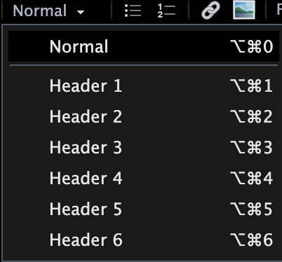

Markdown
Professional Writing in Political Science
Before I even start this section, please read Professional Writing in Political Science: A Highly opinionated Essay by James A. Stimson. It captures a lot of the things I talk about in the seminars in a much better and more eloquent way. Admittedly, the article is aimed at postgraduates and faculty members, but the principles outlined do apply generally to writing a good research project. And this is, after all, what I am asking you to do on this module.
Introduction to Markdown
Stimson rejects Word and other similarly inclined word processing programs, as they are unable to achieve the standard required in professional academic writing. In the context of tables, for example, Stimson writes
You are a professional author. Learn to use the tools of authorship or choose a profession for which you are better suited.
I agree. And I wish more people, students and faculty members alike, would take note of this. The good news for you is that we will be using R on this module, and amongst the many other millions of things that this program enables us to do, it provides an interface to write with Markdown.
Writing your assessment in R Markdown has some very notable benefits, such as great formatting, the seamless integration of graphs and results tables you will produce for your assessment, and a semi-automatic list of references.
If you are already rather overwhelmed by the quantitative component of the module, then please leave this page now. I am NOT expecting you to write this assessment in R Markdown, and you will not be marked any differently for presentation if you decide to write this in MS Word.
Please do have a look at the Essay Template, however, as it is a good benchmark for formatting your assessment wherever you write it. It also contains pointers as to what each section of the assessment should cover.
So, what is R Markdown?
R Markdown provides an unified authoring framework for data science, combining your code, its results, and your prose commentary. R Markdown documents are fully reproducible and support dozens of output formats, like PDFs, Word files, slideshows, and more.1
When we use Markdown in R, the document will have essentially three parts:
- YAML
- Text
- Code Chunks
I will go through these in turn now. To follow along, I recommend you download the Assessment Template in which all of the below is already implemented. Once you open it, delete the first line (empty space), so that the three dashes are on line one. Otherwise, don’t do anything with it, yet. But whilst you are reading what I am discussing here, try to match it to what you see in the Rmd file. If you want to jump ahead and render it into a pdf, please follow the instructions in the template section.
Once you open the essay template in R Studio, you will obtain a few more options in the task bar at the top which will allow you to turn this raw file into a pdf. More on this below, under “Knitting”.
It is possible that R will ask you to install the markdown package. Please do so, and also allow the installation of any dependencies if prompted.
YAML
YAML is an acronym for “Yet Another Markup Language”. This section of the document contains the settings for the entire document, such as the title, information about the bibliography (see below), and additional packages we might need to load. The YAML is gated by three horizontal dashes at the top and at the bottom. In the template, there is some more formatting going on outside of the YAML and finishes at line 109.
Text
Then, in line 112, follows the text which you can basically type as you always would. In order to use the familiar text formatting icons that turn text into headings, or into bold, change the font size, etc. you can switch the R Markdown editor to “Visual” at the top. By default, this is set to “Source” where markdown would expect code to achieve all of these formatting operations.

Once you activate it, this task bar will appear at the top of the Rmd file:

When you structure your document, it is essential that you format headings as such in the document and don’t just make the font larger. Otherwise, the automated table of contents will not work.

The visual editing bar will also allow you to include external pictures (external in the sense that you are not creating them in R whilst creating the document). For this purpose, click on the image icon in the visual editing bar, and a new window will pop up. Under the tab “Image” you can select the image from a file in your computer. Be sure to add a caption in this tab, as well. This will be printed underneath the image in your pdf. Then click the tab “Attributes”, and in the box “ID” enter a unique identifier for the image you are inserting. I usually use “fig” for figure, a colon, and then the name of the figure:

Once you have done that, click OK, and the image will appear where you have placed it. Because you created a caption and a label, you can now refer to this picture in the text, using the \ref{} function. When you write
As we can see in Figure \ref{fig:distribution} ...,
R will insert a cross reference which will get updated automatically when you render the document. This has the advantage that you will never have to say “the figure below” or the “figure above”. This is both imprecise and dangerous, as the position of the figure might change as you write your assessment.
You can also set beautiful equations in markdown. Unless you really want to explain what conditional probabilities are in the the methods section of your assessment, I don’t think you will have to use this feature, however.
Code Chunks
Without writing your assessment in markdown, you will have to copy and paste the modelsummary table into your assessment document. This is not only extra work, but also invites human error. Because every time you change your models you also have to do that copy and paste job again.
When you are writing your assessment in Markdown directly, you can seamlessly include your analysis into the document you are writing. You can hide all of the ugly code, and just show the beautiful modelsummary table at the end. How do you do that? To get started, please switch from the “Visual” mode back to “Source”. You can return to “Visual” editing mode once you are done with this.
Now, all you need to do is to insert a code chunk like this where you want the results table to appear in your document:
```{r, echo=FALSE, message=FALSE, warning=FALSE, error=FALSE}
# set your wd
setwd()
# load packages
library(modelsummary)
library(tinytable)
# load data
# carry out the analysis
# write the modelsummary code
modelsummary()
```
It is important that none of the code in this mini-script produces any visible output (everything needs to be carried out quietly and would not produce output in the console if executed from an R Script), as these results will otherwise appear in the final document. It almost goes without saying that the data set you are analysing will also have to be present in the folder that contains the Rmd file2.
As a first step, use a regular RScript to carry out the analysis, as you can execute commands, and play around with this more easily (rather than knitting the entire thing every time).
Once you are happy with the output, create the chunk in the .Rmd file and copy/paste your code.
List of References
OK, the biggest selling point of this is probably that Markdown will auto-generate a complete list of references by pressing a button. By the way, do you know what the difference is between a bibliography and a list of references?
A bibliography lists all sources you have consulted for a project regardless of whether they are cited in the text, whereas a list of references only lists what has been cited in the text.
Warning:
The PAIS UG Handbook wants you to produce a list of references, but calls it a bibliography üôÑ. Please produce a list of references, and call it ‚ÄúList of References‚Äù in this assessment. You know better now.
This list of references must:
- be organised alphabetically by surname of author
- not be in bullet points
- consistently formatted
- preferably APA styled, but I’m not too precious as long as it’s consistent
I wrote earlier that generating the list of references is semi-automatic, because – as you will have come to realise by now – there is no such thing as a free lunch. The process requires a little preparation, and I am afraid some in-text code.
First, you need to create a separate file in which all of the sources you wish to cite are hosted – a so called .bib file. You can download the full .bib file for PO33Q, in the hope that it already covers some sources you may wish to cite in your assessment. You can open this file in R Studio. As you will see, the structure of each entry depends on the type of document you are citing: a book, an article in a journal, or a website, for example. Here is an entry for a book:
@Book{prz:2000,
author = {Adam Przeworski and Michael E. Alvarez and Jos\'e A. Cheibub and Fernando Limongi},
publisher = {Cambridge: Cambridge University Press},
title = {{Democracy and Development - Political Institutions and Well-Being in the World, 1950-1990}},
year = {2000},
doi = {10.1017/CBO9780511804946},
}
In this entry, prz:2000 is called the citation key. This is what you will use in the Rmd file. For example when you type \citep{prz:2000} this will be shown as (Przeworski et al., 2000) in the final document. In the template, I have enabled the following styles for including a reference in the text:
| Input | Output |
|---|---|
\citep{prz:2000} |
(Przeworski et al., 2000) |
\citep[p. 20]{prz:2000} |
(Przeworski et al., 2000, p. 20) |
\citep[see][p. 20]{prz:2000} |
(see Przeworski et al., 2000, p. 20) |
\citet{prz:2000} |
Przeworski et al. (2000) |
\citet[p. 20]{prz:2000} |
Przeworski et al. (2000, p. 20) |
\citet[see][p. 20]{prz:2000} |
see Przeworski et al. (2000, p. 20) |
When you render the essay template, markdown will automatically put a list of references together and place it where it belongs3. But how do you render the document?
Knitting
To convert the Rmd file to a pdf, you will have to “knit” the Rmd file. An icon with a ball of wool is located in the task bar at the top whenever you have an Rmd file open. Click it to start the conversion.
When there is a mistake in your Rmd file, such as an unbalanced bracket in a code chunk, for example, R will not render the pdf. Therefore, knit your document regularly, so that you can trace the error more easily.
Assessment Template
In order to make your life as easy as possible, I have put together an Assessment Template in the form of an Rmd file that you can knit in R. You can download this here. In order to knit this document, you need to remove the first empty line from the Rmd file (so that the three dashes are in line 1), and place the following files in the same folder as the Rmd file:
- Warwick Crest for the title page.
- Warwick Text for the title page.
- referencesPO33Q.bib which contains all entries for the complete bibliography of the module.
{kind=link}
{kind=link}
Render / knit this document without making any changes to ensure this works. It should look like this. Then you can start writing your assessment. Again, let me encourage you to render/knit the document often, so that you can locate a potential mistake more easily should you receive an error message.
The Template Explained
There is quite a bit of formatting going on in the Rmd file, and this is what all of this code achieves:
- Light grey background to improve readability (a little present to myself for marking)
- Font size 12, one-half spacing
- Font: CMU sans serif for legibility
- Title page with module name, your registration number, submission date, and word count. No page number.
- Page numbering in Roman numerals for table of contents, list of figures, and list of tables
- Table of contents, list of figures, and list of tables are automatic
- Page numbering in Arabic numerals from the start of the text
- All captions are placed beneath figures and tables
- Fully adjustable size of
modelsummarytable (controlled via percentage of text width), so you can control the number of words the table “costs” - Automatic page break if there are fewer than seven lines after a (sub-)section heading
- Automatic List of References, formatted in APA (American Psychological Association) style
- Appendix after the List of References
- Code chunks are set by default not to show the code in the rendered file. Messages, warnings, and errors are suppressed
Assessment Submission
When it comes to submitting your assessment, please only submit the rendered pdf, and NOT the Rmd file. This will not be accepted by Tabula. If you wish to use Markdown on modules other than those taught by me, then please consult the module director whether they are happy to accept submissions in pdf format.
Please ensure that you have copied and pasted your complete RScript into the Appendix section of the template. By complete I mean a script that takes you (or anybody else) from loading the original data sets I provide to the output you include in the report you submit on Tabula. The script should be properly annotated to make your work reproducible and easy to follow.